ДИПЛОМНЫЙ ПРОЕКТ / 2025
ПОГНАЛИ!
Сервис для поиска активных туров по России — по параметрам или через вдохновляющий контент
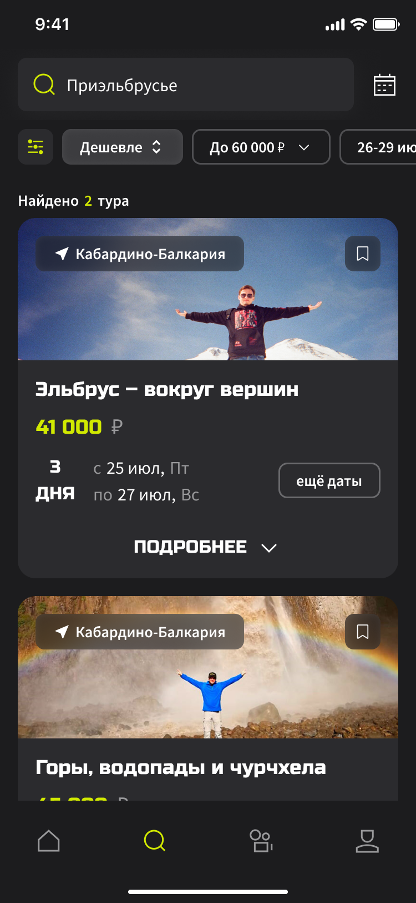

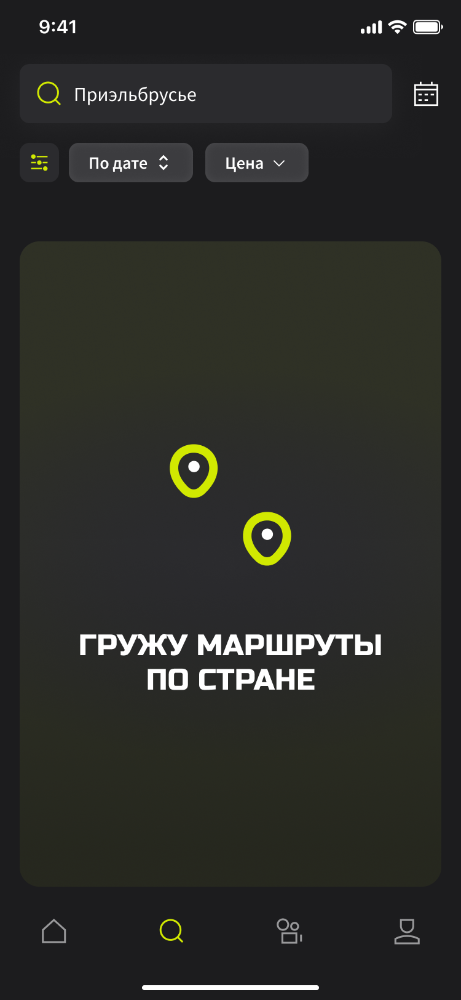
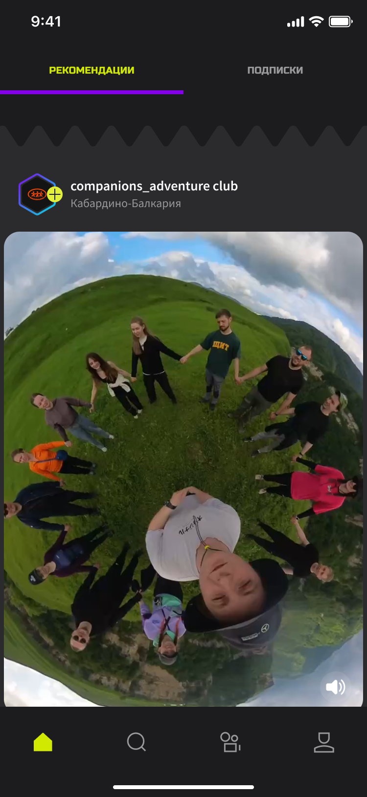
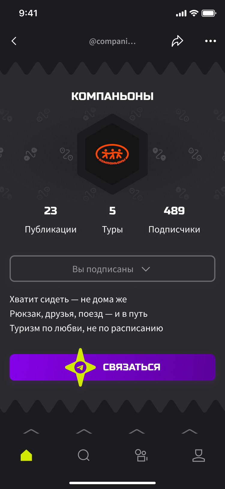
01 / ПРОБЛЕМА
Интересный тур легко встретить случайно.
Сложнее — найти намеренно
Идея выросла из личного опыта: активные туры чаще всего находились в соцсетях, по рекомендации или через сарафанное радио. Затем информацию приходилось собирать по частям на сайтах и профилях организаторов в социальных сетях.
САЙТ
ОТЗЫВЫ
TELEGRAM
ВЫБОР И ПОИСК ТУРА РАСПРЕДЕЛЁН МЕЖДУ РАЗНЫМИ ПЛОЩАДКАМИ
02 / ЗАДАЧА И ГРАНИЦЫ
Спроектировать мобильный сервис, который объединит эмоциональность соцсетей со структурированным поиском туров.
В ФОКУСЕ
- Поиск по датам и направлению
- Идеи через визуальный контент
- Детали тура и организатора
- Переход к прямому общению на привычные площадки
ОСОЗНАННО ЗА РАМКАМИ
Сценарий организатора
Он потребовал бы отдельного исследования и другого набора функций: публикации туров, заявок, аналитики и коммуникации. Также — проработки юридических требований, ответственности сторон и платежей. Я не стала расширять проект поверхностно и ограничила его одним полноценным пользовательским контуром.
Mobile first
03 / ИССЛЕДОВАНИЕ
От предположения
к проверяемым гипотезам
Следующий этап уточнял или проверял выводы предыдущего. Результаты методов я сопоставила и перевела в User Stories, требования и архитектуру продукта.
04 / РЕКРУТИНГ
Я заранее определила, чей опыт исследую
Для интервью мне были нужны люди, знакомые с реальным процессом выбора организованных туров по России. Я задала критерии и распределение участников внутри выборки.
ВАЖНО
Выборка не претендует на репрезентативность для всех путешественников России. Её задача — проверить гипотезы внутри выбранного продуктового сегмента.
05 / РЕЗУЛЬТАТЫ
Люди не только ищут туры — они сталкиваются с ними случайно
находят через знакомых или соцсети
не использовали агрегаторы, так как выбор там нерелевантен
в первую очередь смотрят фото и видео из путешествий
выбирают Telegram для связи
ВЫВОД
Каталога с фильтрами недостаточно: продукт должен поддерживать рациональный поиск и эмоциональное исследование.
AI
Использовала для транскрибации интервью и конкурентного анализа
06 / ДВА СЦЕНАРИЯ
Один продукт — два способа
начать путешествие
Я ЗНАЮ, ЧЕГО ХОЧУ
Пользователь планирует отпуск или уже выбрал направление. Ему важно быстро сравнить стоимость, длительность, маршрут и условия.
ДАТЫ → ФИЛЬТРЫ → ТУР → TELEGRAM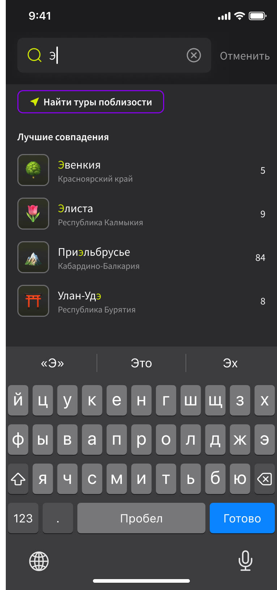
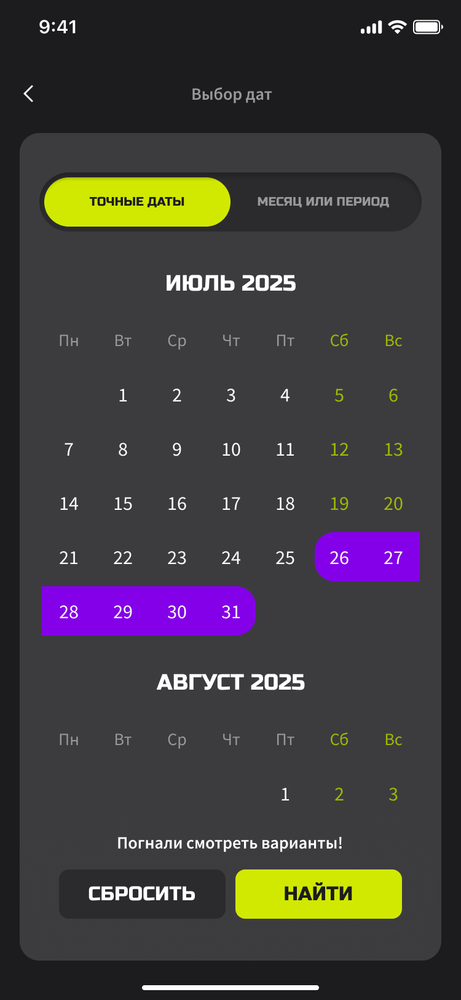
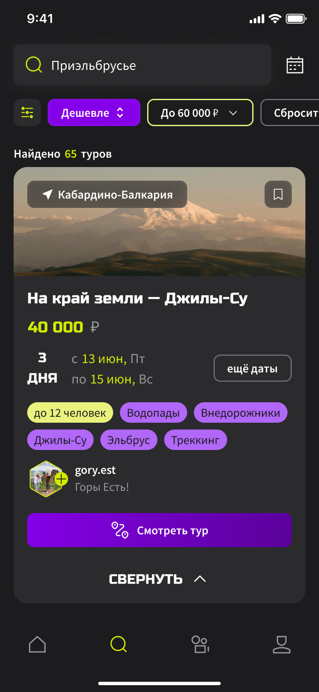
Я ИЩУ ИДЕЮ
Конкретного запроса пока нет. Пользователь исследует контент, находит привлекательную поездку и постепенно переходит к её изучению.
КОНТЕНТ → ТУР → ОРГАНИЗАТОР → СОХРАНИТЬ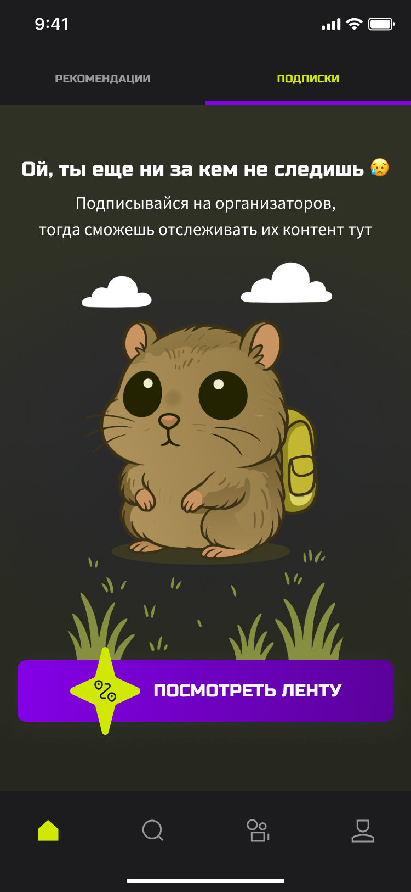
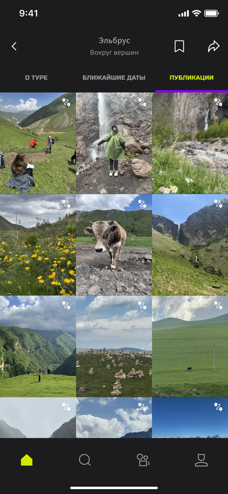
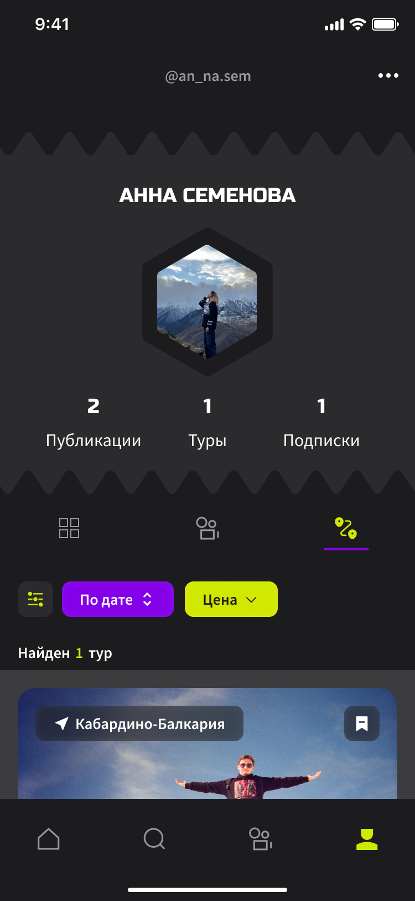
07 / АРХИТЕКТУРА
Контент создаёт интерес.
Данные помогают выбрать.
Знакомая логика контентных сервисов снижает порог входа, а поиск и страницы туров решают утилитарную задачу.
ГЛАВНАЯ
ПОИСК
ВИДЕО
ПРОФИЛЬ
Главное меню
Поиск туровЛента вертикальных видеоПрофиль
пользователяЛента подписок и рекомендаций
Информация о туреСтраница организатора
08 / КЛЮЧЕВЫЕ РЕШЕНИЯ
01 / ДВА ВХОДА В ПОИСК
ДАННЫЕ: люди начинают выбор с дат, критериев или случайной находки.
РЕШЕНИЕ: поиск по параметрам + рекомендательная лента.
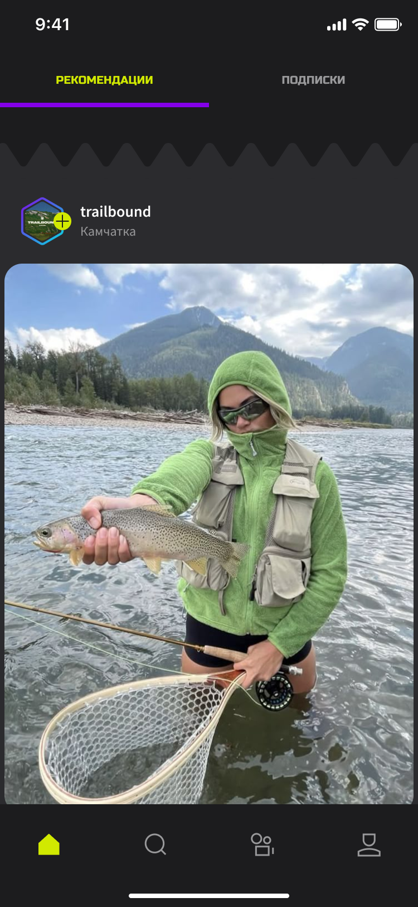
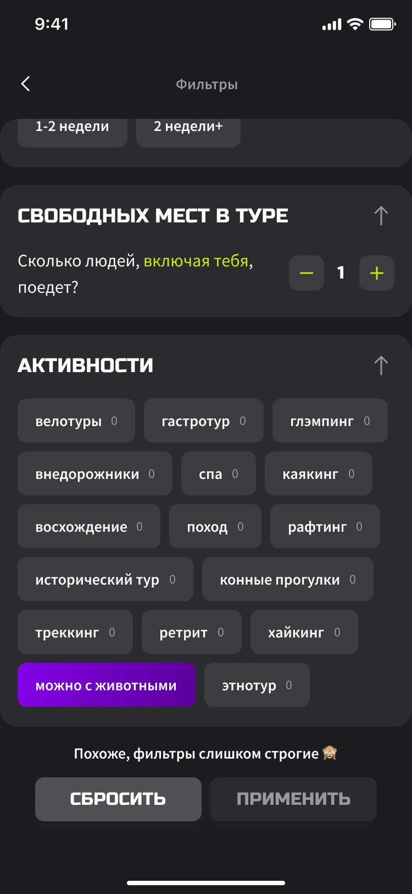
02 / ТУР СВЯЗАН С ОРГАНИЗАТОРОМ
ДАННЫЕ: аудитория оценивает маршрут, людей и доверие к организатору.
РЕШЕНИЕ: профиль с турами, контентом и подпиской.
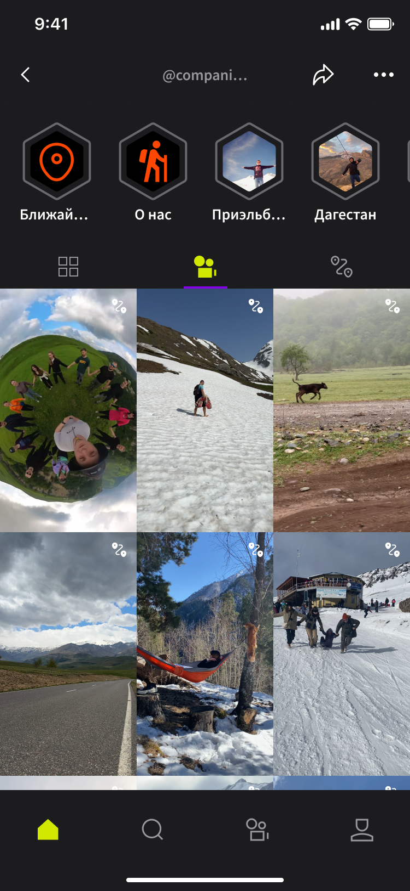
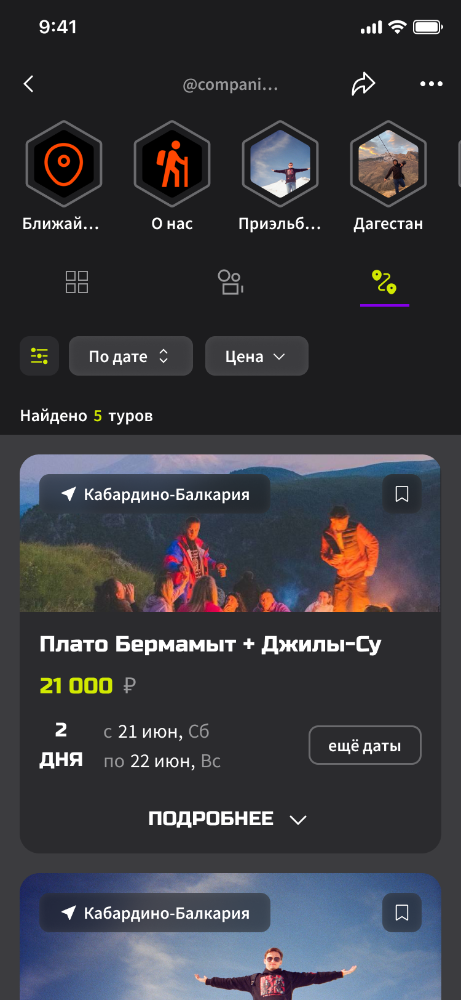
03 / TELEGRAM ВМЕСТО БРОНИРОВАНИЯ
ДАННЫЕ: 70% предпочитают прямую связь в Telegram.
РЕШЕНИЕ: проверить спрос без платёжного и юридического контура.
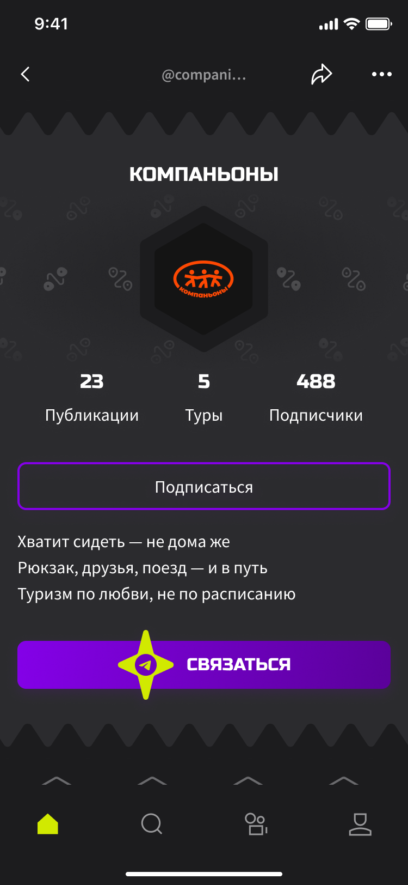
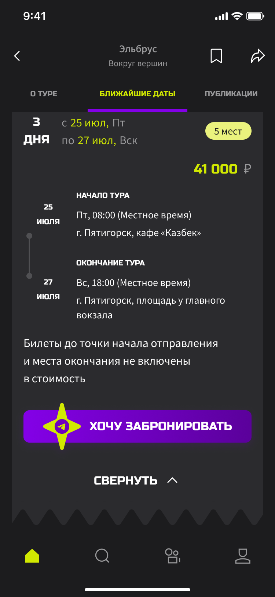
09 / MLP И МЕТРИКИ
Сначала проверить ценность,
затем расширять продукт
ПЕРВАЯ ВЕРСИЯ / MLP
- Поиск и фильтры
- Страница тура
- Профиль организатора
- Публикации и видео
- Подписки и сохранение
- Переход в Telegram
Встроенное бронирование и кабинет организатора — следующие итерации.
ГЛАВНОЕ ДЕЙСТВИЕ
Message Clicks
Переход к диалогу с организатором в Telegram.
CTR К ТУРУ И ПРОФИЛЮСОХРАНЕНИЯVIEW
TIMEPAGE DEPTHRETENTION 30УДОВЛЕТВОРЁННОСТЬ
Это план измерения будущего пилота, а не фактические результаты.
10 / ПРОВЕРКА ПРОТОТИПА
Проверила логику
до проработки визуала
На wireframes участники искали тур, изучали маршрут, переходили к организатору, сохраняли контент и искали связь через Telegram.
Кнопка связи была неочевидна
→ Добавила иконку Telegram
Текстовые переходы терялись
→ Усилила интерактивность
Фото нельзя рассмотреть
→ Добавила масштабирование
HI-FI ТЕСТ ПОДГОТОВЛЕН
7 заданий · Think Aloud
SEQ · CSAT · ошибки · время
уровни критичности
Полноценное тестирование не проведено в сроки диплома.
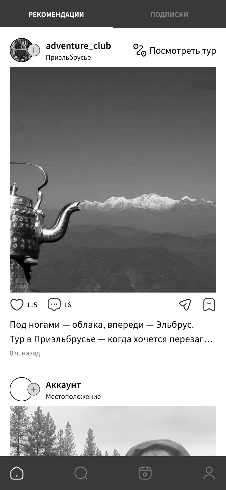
11 / ВИЗУАЛЬНАЯ СИСТЕМА
Визуальный язык для
эмоционального продукта
Айдентика, цветовые и текстовые стили, система отступов, иконки и компонентный UI Kit. Компоненты организованы по принципам атомарного дизайна и собраны на переменных Figma.
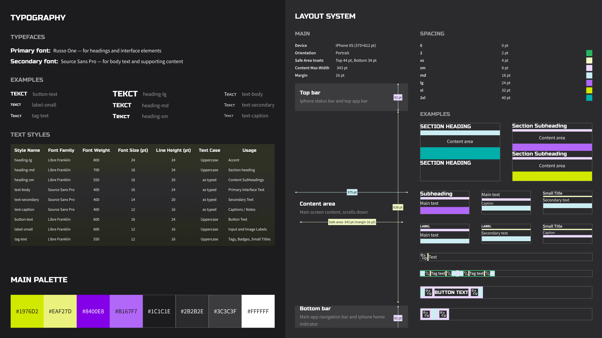
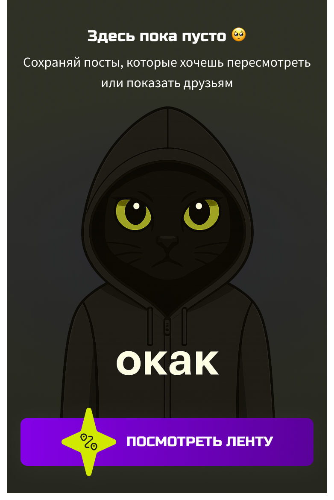
AI
Генерировала графические элементы для экранов-заглушек
12 / РЕЗУЛЬТАТ И РЕФЛЕКСИЯ
От личной проблемы —
к проверяемой концепции
ЧТО ПОЛУЧИЛОСЬ
Исследование повлияло на структуру продукта: способы выбора стали двумя сценариями, потребность в доверии — связанными страницами тура и организатора, а привычка общаться в Telegram — конечным действием MLP.
Полный цикл выполнен самостоятельно: гипотезы → исследование → синтез → архитектура → wireframes → UI Kit → прототип.
ЧТО УЛУЧШИЛА БЫ
01 / Упростила палитру
02 / Пересобрала типографику
03 / Провела hi-fi
usability-тест
04 / Исследовала организаторов
Проект защищён очно перед комиссией.